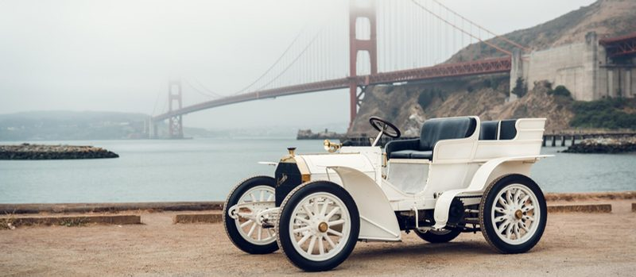
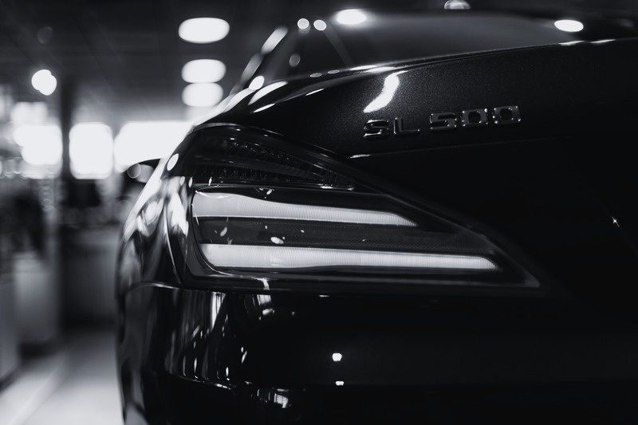
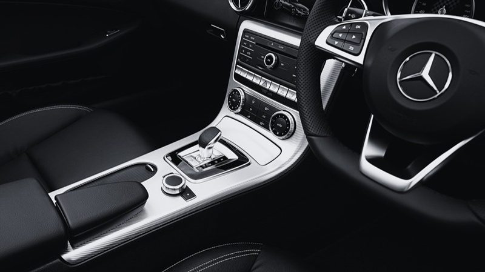
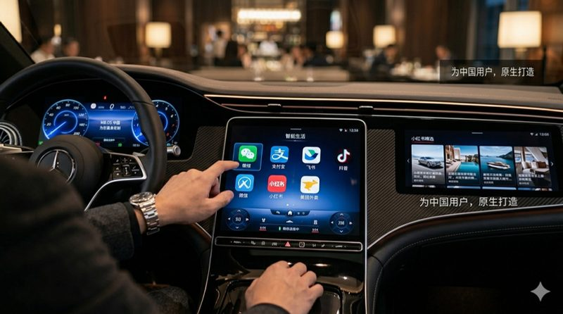
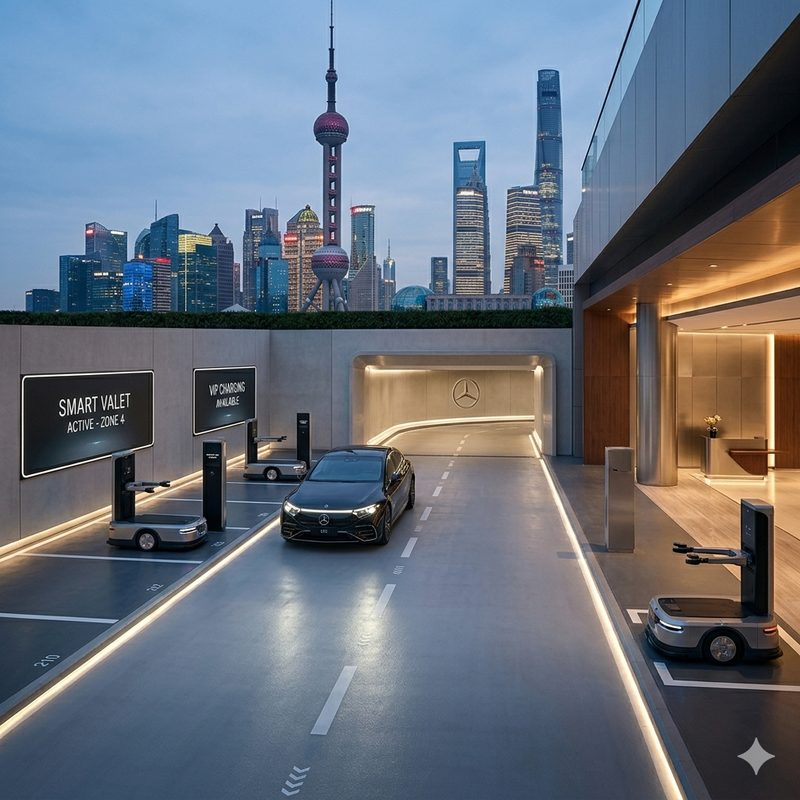
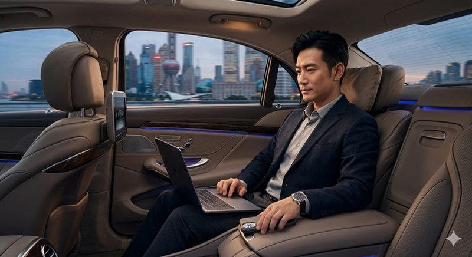
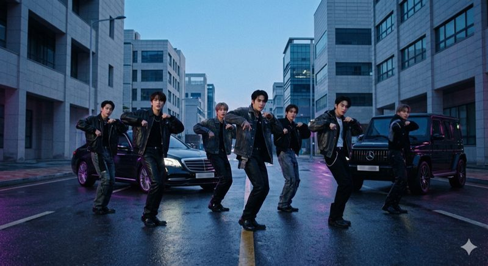

Mercedes builds the strongest product in its history — and is losing the buyer who should want it most. We diagnosed why the next generation of luxury buyers is choosing BMW, Tesla, and BYD instead, and designed a software-first strategy to win them back in China first.
Mercedes has never built a better car — Level 3 autonomy, 800V charging, MB.OS live across 2M+ vehicles. But operating profit is down 57%, China sales are down 27%, and only 28% of millennials would consider the brand at all. Our team diagnosed the gap and proposed where Mercedes should place its next dollar.
The product has never been stronger
CLA won European Car of the Year 2026
GLC order books filled into H2 2026, production running three shifts
Only automaker with certified Level 3 autonomous driving
800V fast charging: 10–80% in 22 minutes
MB.OS live, OTA pushed to 2M+ vehicles
The business has never been weaker
−57% operating profits in 2025
−27% China sales in Q1 2026
#1 → #3 in the U.S.
54 average buyer age
28% of millennials would consider Mercedes
3.5★ Mercedes me app rating
🎯
Goals
Diagnose why engineering leadership isn't converting to market share
Identify the single highest-leverage market to prove a turnaround
Propose a software-first feature set built for that market
Model the cost, ROI, and risk of the bet before recommending it
⚡
Challenges
Legacy hardware DNA vs. a market that now buys on software
BYD and NIO compete on price Mercedes cannot and should not match
China's decline may be structural, not cyclical
140 years of heritage can read as "old," not aspirational
🧭
My Role
Product strategist on a team of three
Led competitive analysis and the SWOT synthesis
Modeled the $320M budget allocation and ROI case
Authored the OKRs and phased go/no-go roadmap

140 Years of Engineering Firsts
Vision
To prove that engineering leadership is earned in every generation through the materials we choose, the software we build, and the customers we decide to serve.
Mission
Build the world's most desirable cars. Not the most reliable. Not the cheapest. Desirable. Compete on aspiration and engineering, not just specs.
1886Built the world's first car. Not a luxury brand. An engineering company solving a transport problem.
1959Invented the crumple zone.
1980Invented the airbag.
2025Level 3 autonomy. Mercedes creates standards, it does not follow them.
Engineering DNA is both the strength and the risk. Mercedes perfects. Tesla iterates. BYD undercuts. BMW refreshes faster.
Diagnosis
Why This Is Happening
The next generation judges luxury by software, sustainability, and speed of innovation, not just the badge. Three forces explain the gap.

01 · Aging Buyer Base
The average Mercedes buyer is five years older than BMW and Audi buyers. Only 28% of millennials would consider Mercedes compared to 40% for competitors. As Millennials and Gen Z drive EV adoption and older generations plateau, Mercedes risks losing relevance with the next generation of luxury buyers.
02 · China's Structural Decline
China was 35% of global sales. Down 19% in 2025 and 27% in Q1 2026 with no visible floor. BYD and NIO offer comparable tech at 30–50% lower prices, and NIO ET9 outsold the BMW 7 Series. This is not just competition. Government policy actively favors domestic brands.

03 · Software Lags Behind Hardware
The Mercedes me app has a 3.5-star rating with remote functions failing and UI inconsistencies across models. Legacy vehicles run 500+ controllers from different suppliers while Tesla iterates weekly. Mercedes wants to sell software subscriptions but cannot monetize a platform customers do not trust.
The SWOT
The strengths are real and defensible. The weaknesses are acknowledged but not where we spent our time — the opportunity is what the strategy is built around.
Strengths
Only automaker with certified Level 3 autonomy
CLA won European Car of the Year 2026
800V architecture: 10–80% charge in 22 minutes
MB.OS live and pushing OTA updates to 2M+ vehicles
140 years of engineering credibility competitors can't fabricate
Opportunities
46% of global luxury sales now come from millennials and Gen Z
China's digital-native luxury buyer is underserved by Western brands
$4.5–8B in recoverable China revenue from a 1.5% share recapture
Software subscriptions monetize a platform that already exists
No competitor has combined heritage, L3 clearance, and local-first software
Weaknesses (noted, not the focus)
Mercedes me app rated 3.5 stars; 500+ legacy supplier controllers
Average buyer age 5 years older than BMW and Audi
Threats
BYD and NIO undercut on price by 30–50% with comparable tech
Chinese industrial policy actively favors domestic brands
Tesla iterates software weekly; Mercedes cannot match that cadence
NIO ET9 already outsold the BMW 7 Series in executive luxury
Three Rivals, Three Different Fights
Mercedes can't beat BMW, Tesla, and BYD/NIO on their own terms simultaneously — each is winning a different argument.
BMW2.2M units · +215K vs. Mercedes
Best-selling premium brand globally. BMW EV sales: 427K units, up 13.5% YoY, while Mercedes EV sales fell 22% to 205K. Neue Klasse launches EV-native in 2026 and could define the next decade before Mercedes' MMA platform fully rolls out.
Tesla600K+ U.S. units · Model 3 at $35K
Leading luxury brand in the U.S. Wins on software cadence, app experience, and charging network — a gap that's hard to justify against a $47K CLA EV. Mercedes has certified Level 3, but Tesla iterates faster.
BYD / NIO30–50% lower price · #2 in China luxury
Comparable tech at a fraction of the price, backed by government policy. NIO ET9 already outsold the BMW 7 Series and Audi A8L in China, in a segment Mercedes owned.
Capability
BMW
Tesla
BYD / NIO
Mercedes (Current)
EV-native platform
✓
✓
✓
Partial
Software update cadence
Slow
Weekly
Moderate
Slow
Local ecosystem integration
✗
✗
✓
✗ (today)
Price competitiveness (China)
✗
Mid
✓
✗
Heritage / prestige
Moderate
Low
Low
✓
Certified L3 autonomy
✗
✗
✗
✓
The gap: No competitor combines heritage, certified L3 autonomy, and a genuinely local software ecosystem. That combination — not a price war — is the opening we designed the strategy around.
Strategy
The North Star
Two segments united by a single expectation. Luxury should be advanced, sustainably engineered, and digitally connected.
Proposed Vision
By 2029, Mercedes is the luxury brand the next generation chooses, not inherits. Buyer age declines across EV platforms. China returns to sustainable growth. MB.OS enables recurring software revenue at scale. Sustainability is visible in the product, not buried in a corporate report.
Who We Are Building For
The Next Generation Buyer
28–40 year olds who built their wealth, they did not inherit it
Entrepreneurs, founders, and influencers with high disposable income
Digital-native, globally aware, and deeply connected to their local culture
Millennials and Gen Z now drive 46% of luxury sales globally
The Gap No One Is Filling
Luxury cars that feel designed for their parents, not for them
Software that does not speak their language or fit their life
A badge that signals old money, not ambition
What Only Mercedes Can Offer
The only western luxury brand with 140 years of heritage and L3 clearance
Built Chinese-first for launch, designed to follow them everywhere they go
Not the car you inherit. The car you earn.
Our Offensive Strategy
The Proposed Features
China is Mercedes's biggest market and the world's most competitive car tech environment. A China-first pilot, built around four features that turn Mercedes from a hardware brand into a platform its next buyer already lives inside.

01
Native Chinese App Integration — MB.OS China
Built for Chinese customers from the ground up, not adapted from a Western platform. WeChat, Alipay, Feishu, Douyin, and Xiaohongshu are integrated natively into the car — the car fits into the buyer's life instead of asking them to adapt to it.

02
VIP Smart Valet Network
Pull up to a partner hotel, airport, or restaurant. Step out — the car parks and charges itself, then returns on request via WeChat. Launching exclusively in Beijing and Shanghai luxury zones, priced for a $100K+ buyer BYD isn't competing for.
"BYD sells at $30K. We sell at $100K+. We are not in the same race."

03
Premium AI Concierge — powered by ByteDance Doubao
The car books its own restaurants, reroutes around traffic, syncs the owner's calendar, detects a battery issue and books its own service appointment. It renews your insurance. It handles its own maintenance.
"You do not manage your car. Your car manages itself."

04
Heritage-Forward Marketing
140 years of engineering positioned as something earned, not inherited — Chinese short-drama product placement on Douyin and Maoyan, self-made entrepreneurs as ambassadors, and product placement in Marvel and Fast and Furious.
"By the time our buyer turns 35, Mercedes already means something to them."
Cost-Benefit Analysis
$320M to Prove the Model
A two-year China pilot, priced and modeled before a single global dollar is committed.
Recoverable revenue from a 1.5% China luxury share recapture
14×
Top-line ROI multiplier — revenue generated per dollar spent on the pilot
3.8×
Projected LTV lift in ecosystem revenue per digital-native buyer
Execution
OKRs, Roadmap & Risks
OKRs
O1Win the next generation Chinese luxury buyer
Average Mercedes buyer age in China drops from 54 to 35
20% of new Mercedes China sales come from under-35 buyers
Brand consideration among Chinese 28–35 year olds rises from 28% to 45%
O2Rebuild Mercedes as a software-first luxury brand
MB.OS China app rating rises from 3.5 to 4.5 stars
65% of China pilot fleet actively using Doubao AI Concierge features weekly
First software subscription product live and generating $50M annual recurring revenue
O3Prove the China model before going global
Smart Valet operational in 10 partner venues across Beijing, Shanghai, Guangzhou, Shenzhen and Chengdu
Mercedes China luxury segment share recovers to pre-2024 levels
All December 2026 go/no-go KPIs met, triggering Phase 2 global expansion budget release
By Dec 20264.0★
MB.OS China app rating, up from 3.5 — the first proof point before anything else scales
By Jun 202765%
Weekly active retention on Concierge AI across all Tier-1 China cities
By Dec 2028<45
Mercedes' average EV buyer age, down from 54 — the north-star number for the whole bet
The Phased Roadmap
Each phase carries its own go/no-go gate — global expansion budget only releases if China proves the model.
2026
Digital Foundation
MB.OS China app overhaul with native WeChat/Alipay integration. Doubao AI Concierge beta launches in Shanghai and Beijing. Smart Valet pilots at 3 luxury hotels.
Go / no-go
2027
Experience Layer
MB.OS reaches feature parity across all China models. Concierge AI and Smart Valet expand to Guangzhou, Shenzhen, and Chengdu. Full rollout across China Tier-1 cities with biometric personalization.
Go / no-go
2028
Global Expansion — contingent on China KPIs
MB.OS digital stack adapts and deploys to EU and US markets. Smart Valet expands to 50+ venues globally. Global brand repositioning: "the car the next generation chooses."
Assumptions, Risks & Mitigations
We know what we are betting on and we have a plan if we are wrong.
HighMB.OS China can be rebuilt
If we are wrong: Mercedes' current app is rated 3.5 stars. Legacy tech debt and 500+ supplier controllers make fast software iteration extremely difficult.
Mitigation: Partner-first approach. Doubao, WeChat and local engineering teams carry technical execution. Mercedes provides product vision and brand.
HighDoubao partnership holds
If we are wrong: US-China tensions could restrict or complicate a ByteDance partnership for a German brand operating globally.
Mitigation: MB.OS China is ring-fenced from global MB.OS. China-only integration with no cross-contamination of data or architecture.
HighAutonomous valet regulations hold
If we are wrong: MIIT already tightened autonomous driving rules in 2025. Further restrictions could disable the valet feature entirely.
Mitigation: If regulations tighten, Phase 1 converts to a human concierge-assisted model. Same experience, same zones, no material cost change.
MedChina revenue recovers
If we are wrong: China decline may be structural, not cyclical. BYD and NIO continue gaining ground and the revenue floor does not materialize.
Mitigation: Phase 1 is a 2-year pilot with clear go/no-go metrics before full capital deployment. If China does not respond, pivot budget to Western young buyer strategy.
Med$320M budget is sufficient
If we are wrong: Software builds, infrastructure and marketing in China routinely run over. $320M may not be enough to execute all four features.
Mitigation: $40M contingency is built into the budget. Phased rollout means we pause and reassess after Phase 1 before committing Phase 2 spend.
LowHeritage marketing resonates
If we are wrong: Younger Chinese consumers increasingly favor domestic brands as symbols of national pride. Heritage may read as foreign, not aspirational.
Mitigation: Lead with craft and personal achievement, not history. The message is not we are old. The message is you earned this.
Takeaways
The hardest part of this project wasn't identifying that Mercedes has a next-generation problem — the numbers make that obvious. It was resisting the urge to propose everything at once, and instead sequencing a single, provable bet.
Modeling the cost-benefit case changed how I thought about the recommendation: the strategy isn't defensible unless it's priced, phased, and reversible if China doesn't respond.
A strong product and a strong business are not the same claim
Heritage is an asset only if the pitch is "earned," not "inherited"
Price every recommendation before presenting it as strategy
A phased go/no-go structure turns a big bet into a manageable one
What went well
Anchoring the whole strategy on China gave us one clear, defensible bet instead of a scattered global plan.
What we'd change
We'd stress-test the heritage-marketing angle earlier — it's the one assumption we're least confident in.
Biggest surprise
NIO already outselling the BMW 7 Series reframed the timeline from "eventually" to "now."
Next step
Pressure-test the $320M number against real vendor quotes for MB.OS localization work.